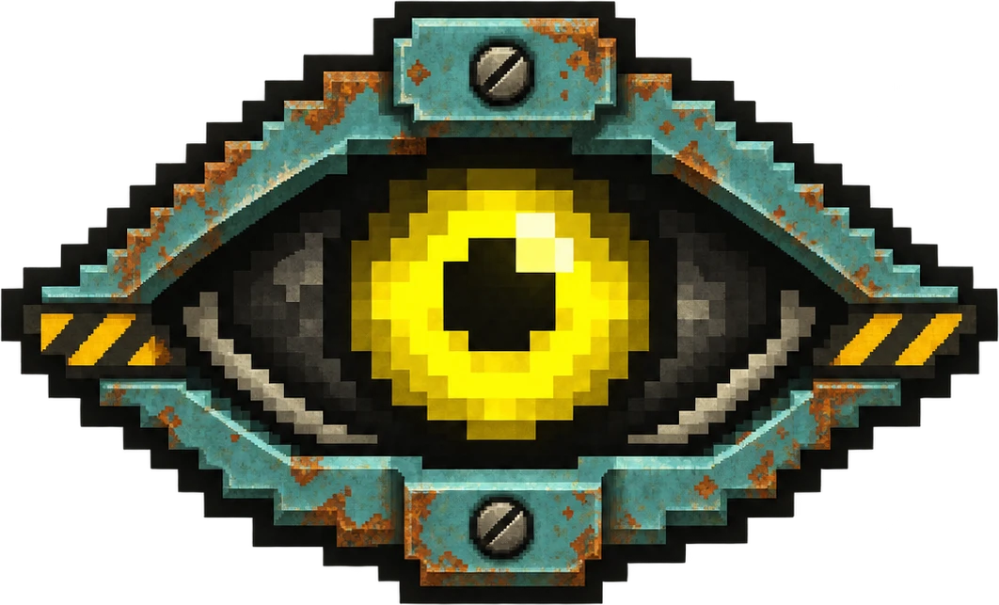

SMENA слушает музыку и собирает картинку из элементов фотографий: каждое фото разрезано на куски (элементы) и чистый фон. Фото идут по кругу: past (уходящее), master (текущее), future (следующее). Элементы въезжают, уезжают, поворачиваются, скользят — и всё это по командам триггеров: 20 датчиков, каждый слушает свой признак звука.
Это руководство — не инструкция «как правильно». Ручек много специально: крутите, соединяйте, ломайте. Ничего не испортится — есть СБРОС, RND и три заводских пресета.
Вкладка ТРИГГЕРЫ и левый фейдербанк (крышка «СМЕНА», клавиша B). У каждого триггера:
Тип: уровень — действует непрерывно, пока признак есть; импульс — короткий удар на атаку; событие — редкая крупная перемена (смена части трека, смена гармонии).
| № | триггер | признак звука | что делает со сценой |
|---|---|---|---|
| 01 | ЧАСТЬ событие | смена части (≥ 3 признака) | все элементы мерцают 1 долю → на долю остаётся только фон master → элементы master въезжают обратно |
| 02 | БАС уровень | энергия 60–150 Гц | нижние элементы плавно ездят по X вслед за басом (сглаживание 0.6 с) |
| 03 | ЯРК уровень | центроид спектра | верхние элементы поворачиваются по часовой: чем ярче звук, тем больше угол (до 6°) |
| 04 | АКЦН импульс | атака выше локального фона | встряска: сильный акцент — все элементы, слабый — половина; затухает за 0.4 с |
| 05 | СТЕР уровень | стерео-ширина S/M | верхние элементы медленно ездят по X за стерео-шириной (сглаживание 1.5 с) |
| 06 | УДАР уровень | доля ударного (HPSS) | почерк: много ударных — въезды и полосы шагают ступеньками, мало — плавно |
| 07 | ТОН уровень | тональная ясность | один элемент master мигает по 1/8 доли |
| 08 | ШУМ уровень | плоскостность спектра | слабая дрожь содержимого нижних элементов |
| 09 | СУБ уровень | энергия 20–60 Гц | дополнительная замена нижнего элемента past (на четверть доли) |
| 10 | ВЕРХ уровень | энергия 6–16 кГц | содержимое элементов с осью Y скользит по вертикали |
| 11 | НСЕР уровень | энергия 150–500 Гц | содержимое центральных элементов с осью X скользит по горизонтали |
| 12 | ГАРМ событие | смена хромы | past и future мерцают и исчезают, future въезжает заново |
| 13 | ХЭТ уровень | поток атак 6–16 кГц | новый узор полос у элементов с осью Y + дрожь верхних |
| 14 | РИТМ событие | ясность пульса | быстрая замена содержимого нижних (полосы ускоряются, затухает за долю) |
| 15 | ОБРЫВ импульс | RMS ниже медианы на 6 дБ | обрыв: past мигает в такт (ручка ПРОВАЛ) и включает оркестратор вращения |
| 16 | СЕР уровень | энергия 0.5–2 кГц | пульс скорости полос у элементов с чётными номерами |
| 17 | LFO уровень | пульсация яркости в такте | общая скорость содержимого и замедление ks |
| 18 | 2–6К импульс | атаки 2–6 кГц | короткий отскок верхних элементов вверх |
| 19 | ГРОМ уровень | RMS | дополнительная замена верхнего элемента past |
| 20 | WOBB уровень | пульсация баса в такте | круговая замена по часовой со свингом и пропусками по ks |
<кеш>\triggers\*.json). Так у каждого набора фото своя «чувствительность», а пресет —
свой «характер».На правом краю левого банка — ⚄ RND: случайный набор ручек обоих банков, каждый раз новый (в разумных пределах — без полного хаоса). Нажимайте, пока не зацепит, потом SAVE. ↺ СБРОС — все каналы и отсек управления по умолчанию. Передумали — Ctrl+Z.
| что | зачем |
|---|---|
| ЗВУК · ИСТОЧНИК | что слушать: системный выход (loopback — всё, что играет компьютер) или вход звуковой карты. Traktor / Reaper на ASIO в loopback не видны — берите вход карты или виртуальный кабель. |
| SUB · MID · HI | эквалайзер выхода (100 Гц · 1 кГц · 8 кГц, ±12 дБ) — для звука, который играет сама SMENA (режим «файл»), и для записи REC. На триггеры не влияет. |
| VOL | громкость выхода. Лампочка: красная — 0 (звук выключен), зелёная — тем ярче, чем громче. |
| ЗАДЕРЖКА | сдвиг визуала относительно звука, мс: крутите, пока вспышки не совпадут с бочкой. |
| FX | общий множитель силы всех движений от триггеров. |
| |◀◀ · ▶ · ▶▶| | к первому фото · пуск / стоп (Пробел) · следующее фото (→, на ближайшей сильной доле). |
| ◀ 003/054 ▶ | счётчик кадров: номер фото / всего, стрелки — назад / вперёд. |
| BPM · TAP · RESET | темп находится сам. Промахнулся — TAP (4+ удара, T), RESET — обратно в авто. |
| HUD | служебные подписи поверх превью (на HDMI не идут), H. |
| SAVE | сохранить всё в текущий пресет (подпись под кнопкой) + таблицу триггеров, Ctrl+S. |
| REC | запись того, что идёт на HDMI, в mp4 со звуком (Видео\SMENA). Лампа горит — пишет. |
| ▼ сверху над картинкой | шторка с правилами подключения и ссылкой на это руководство. |
Колонка слева от картинки: ВКЛ и ФАЙЛ… — картинка поверх показа (логотип, надпись — лучше PNG с прозрачностью).
| ДЕРЖАТЬ | сколько секунд верхнее фото на экране; 0 — пока включено |
| ПРОЯВЛ. | плавность появления и ухода верхнего фото |
| РАЗМЕР | размер верхнего фото (доля кадра) |
РЕЗКО / ПЛАВНО — новые положения сразу или со следующего фото, мягко. ПРОЗР. ВКЛ / ВЫКЛ — при малой силе элементы полупрозрачные или всегда целиком (тогда меньше силы — меньше элементов в игре).
| ОРИГИНАЛ | оригинальность фото: 100 — фото как есть, без элементов и движения; 50 — как обычно; 0 — все элементы и максимум динамики |
| ПОКАЗ | длительность показа целого исходного фото при вспышке (элементы на местах); белая вспышка — в начале |
| ВСПЫШКА | шанс вспышки оригинала: в конце фото — как вспышка камеры: элементы встают на места, кадр вспыхивает белым и на долю секунды видно исходное фото; 100 — у каждого фото |
| СИЛА ЭФФ. | сила эффекта: 0 — фото из папки просто сменяют друг друга, без элементов и движения; 100 — полный SMENA |
| ЭЛЕМЕНТЫ | гранулярность: сколько элементов фото двигаются (крупные — первыми); остальные стоят на месте как часть фото |
| ЯРКОСТЬ | общая яркость выхода (превью, HDMI, запись) |
ON / OFF — OFF возвращает смену кадров первых версий (элементы, на такт, по папке). Кнопки РЕЗ · ЭЛЕМ. · НАПЛЫВ · ШТОРКА · МЕРЦ · ЧЁРН ставят фейдер ВИД.
| ВИД | вид смены кадра: 0 рез · 1 элементы · 2 наплыв · 3 шторка · 4 мерцание · 5 через чёрное. Подайте LFO — переходы будут меняться сами |
| ПЕРИОД T | раз в сколько тактов меняется фото |
| ДЛИТ. | длительность перехода (наплыв, шторка, мерцание, через чёрное) |
| КРИВАЯ | кривая перехода: 0 — линейно, 100 — мягкая S |
| КВАНТ | смена фото только на: 0 — долю · 1 — такт · 2 — каждые 4 такта |
| СЛУЧАЙ | доля переходов, вид которых выбирается случайно |
| ПОРЯДОК | порядок фото: 0 — по папке · 1 — случайно · 2 — туда-обратно |
Четыре генератора: форма (∿ синус · △ треугольник · ⊿ пила · ⊓ меандр · S&H случайная ступенька), СКОРОСТЬ (в режиме BPM — от 1/4 доли до 256 тактов на цикл, в режиме Гц — свободно), ГЛУБИНА (100 % — на половину хода фейдера в обе стороны). Кривые над панелями — форма и фаза прямо сейчас.
Провода: тяните от «ВЫХ» к гнезду под любым фейдером — на вкладке, в отсеке управления, под СИЛОЙ любого триггера. На одно гнездо можно несколько проводов — складываются. Правый клик по гнезду — снять. Оранжевая черта на фейдере — где он сейчас с учётом LFO.
Правый фейдербанк (клавиша N) — устройство цикла смены фото.
| PAST | PAST — сколько живут элементы прошлого фото после смены: доля периода (0.3 — первые 30 % цикла они по одному уезжают по кругу) |
| MASTER | MASTER — сколько тактов текущее фото показывается одно (без въездов следующего) после ухода past |
| ВЪЕЗД | длительность въезда элемента |
| МЕРЦ | доля появлений мерцанием на месте вместо въезда (SPEC §2.5) |
| ГАЗЕТА | газетные вырезки: в среднем раз в N тактов; 0 — выключено (SPEC §4.6) |
| ПРОВАЛ | ПРОВАЛ — при обрывах звука (триггер №15) элементы прошлого фото мигают в такт: какую часть каждой доли они скрыты (0 — не мигают, 100 — пропадают целиком) |
| СКОЛЬЖ. | СКОЛЬЖЕНИЕ — картинка внутри элементов: сам элемент стоит на месте, а его содержимое скользит полосами (как ленты). 0 — содержимое неподвижно, 100 — как задумано, 200 — вдвое быстрее |
| РАЗБРОС | РАЗБРОС — насколько по-разному скользят полосы одного элемента: 0 — все одинаково, 0.6 — одни почти стоят, другие летят |
| ЗАМЕДЛ. | ЗАМЕДЛЕНИЕ (ks) — потолок замедления. Программа сама считает ks по тому, сколько признаков звука сейчас активно (ряд Фибоначчи 1, 2, 3, 5, 8, 13, 21): спокойная музыка — ks мал, плотная — велик. Чем больше ks, тем реже идут смены элементов по кругу и тем медленнее скользит содержимое (в ks раз). Ручка ограничивает максимум: 1 — замедления нет никогда, 21 — полный диапазон |
| ПЕРИОД | ПЕРИОД — раз в сколько тактов меняется фото (16 — каждые 16 тактов новое фото) |
Пресет хранит всё, кроме таблицы триггеров. Загрузка — вкладка ПРЕСЕТЫ, двойной клик.
Вкладка ФОТО: папка фото и папка кеша. Новые фото — «Подготовить фото»: нейросеть SAM 2 находит объекты, отбор выбирает элементы, LaMa дорисовывает чистый фон (≈ 20 с на фото). Порядок показа — по номерам в именах файлов.
Редактор элементов (кнопка на вкладке ФОТО) — поправить, что стало элементом:
| Пробел | пуск / стоп | ← → | фото назад / вперёд |
| Home | к первому фото | T | tap темпа |
| B / N | левый / правый банк | H | HUD |
| M | беззвучно | Ctrl+S | SAVE |
| Ctrl+Z | отмена СБРОС / RND |
У каждой ручки и кнопки есть подсказка — наведите курсор. Всё, что вы делаете, пишется во вкладку ЖУРНАЛ.